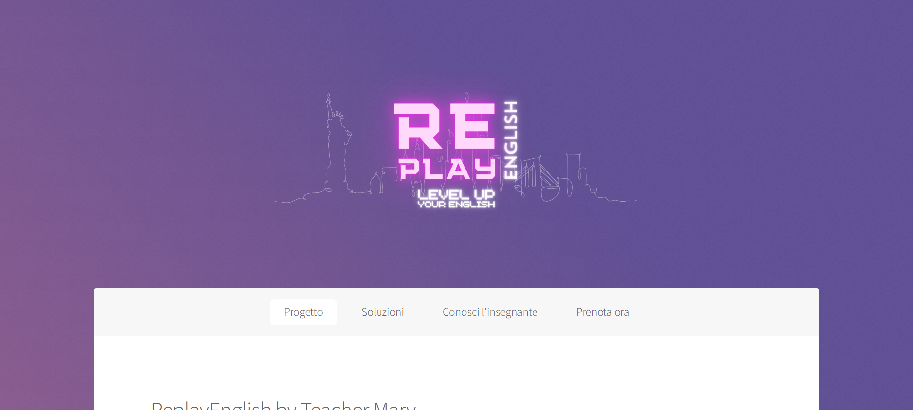
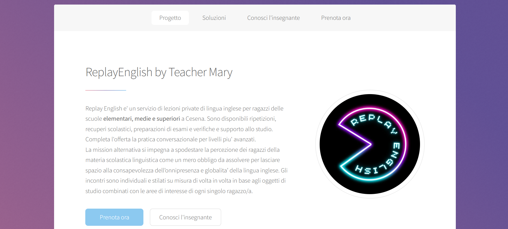
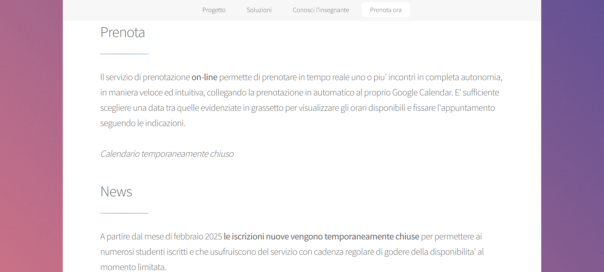
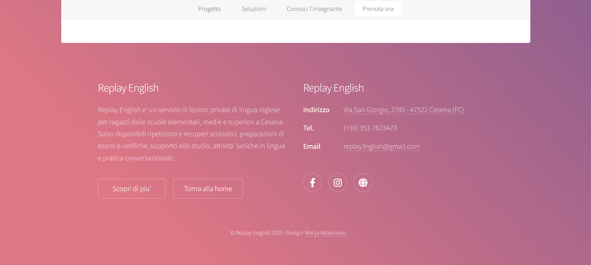
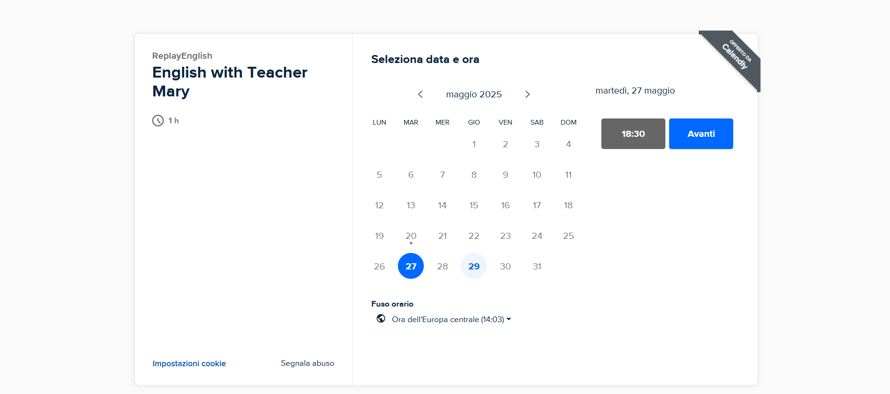
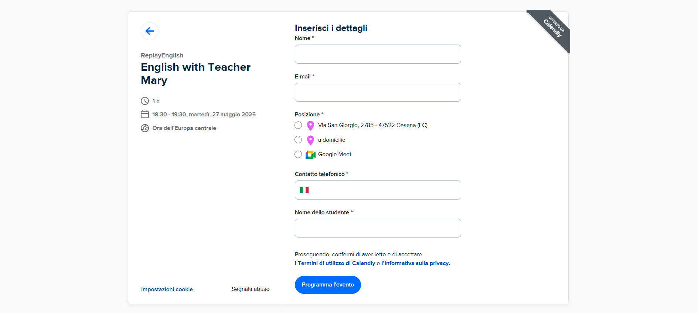

«C'era una volta Teacher Mary»
Genere: Didattica personalizzata, supporto scolastico, apprendimento ludico
Linguaggi utilizzati: HTML, CSS, JavaScript, Sass
Link: replayenglish.github.io
ReplayEnglish è un sito web che ho progettato per supportare la mia attività secondaria di
insegnante di inglese per ragazzi. Si tratta di un sito vetrina, volutamente semplice e lineare, pensato per presentare in modo chiaro e immediato chi sono, cosa offro e come
mettersi in contatto con me.
Il sito fornisce una breve presentazione dell'insegnante e descrive i principali servizi offerti. L'obiettivo non è fornire contenuti didattici online, ma creare un canale
diretto ed efficiente di comunicazione tra me e le famiglie interessate.
Per facilitare la gestione degli appuntamenti ho utilizzato Calendly, una piattaforma
che consente agli studenti di visualizzare le disponibilità da me gestite in base al tempo a disposizione e prenotare le lezioni in modo autonomo e immediato. Questo sistema
semplifica la pianificazione, riduce gli scambi di messaggi e garantisce una gestione efficiente del tempo per entrambe le parti: al momento della prenotazione sia io che lo studente/genitore
riceviamo una notifica via email con i dettagli dell'appuntamento che viene aggiunto al calendario personale.
Dal punto di vista grafico, il sito è stato progettato con un'interfaccia pulita ed essenziale, con particolare attenzione alla semplicità d'uso (UI/UX).
La navigazione è intuitiva e accessibile anche per genitori con poca dimestichezza con la tecnologia: pochi clic, nessuna distrazione, tutte le informazioni
fondamentali subito visibili.
Per lo sviluppo ho utilizzato HTML, CSS e JavaScript, linguaggi già noti, mentre durante la realizzazione ho avuto modo di
esplorare e sperimentare con Sass, per migliorare l'organizzazione del codice CSS e rendere la manutenzione dello stile più efficiente.





